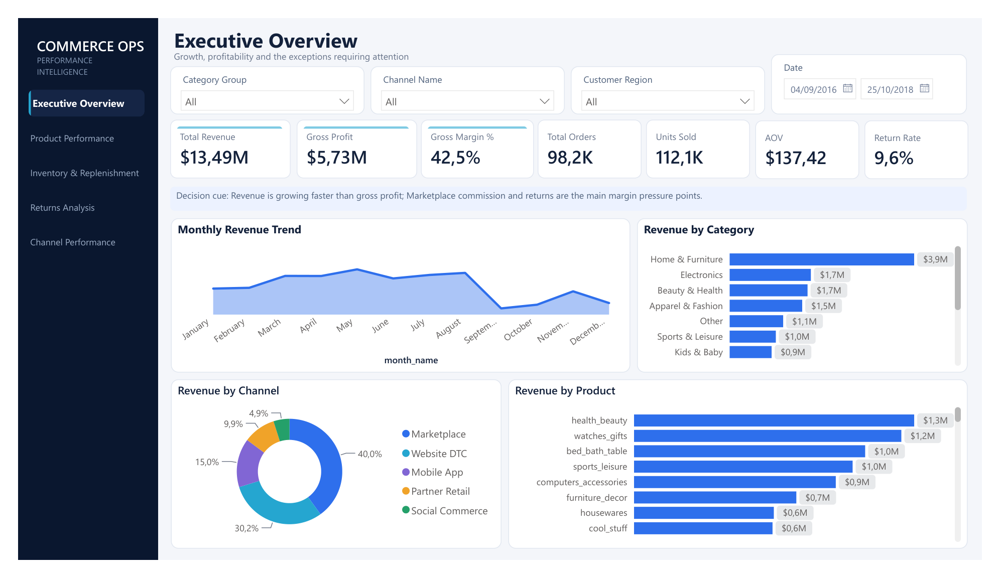
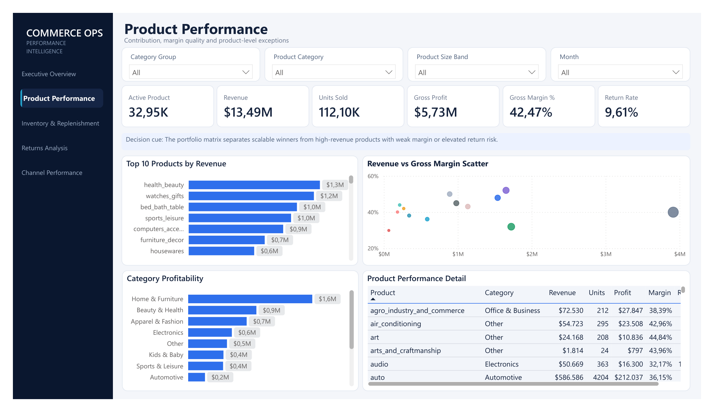
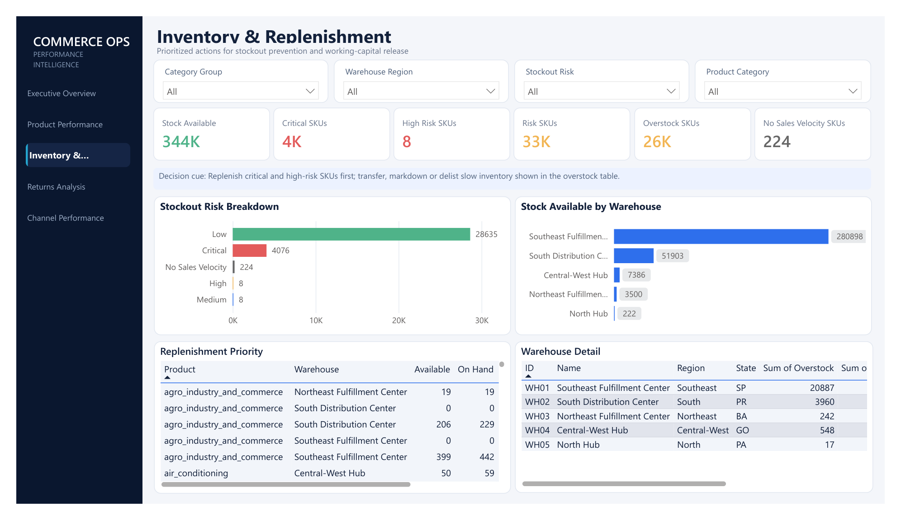
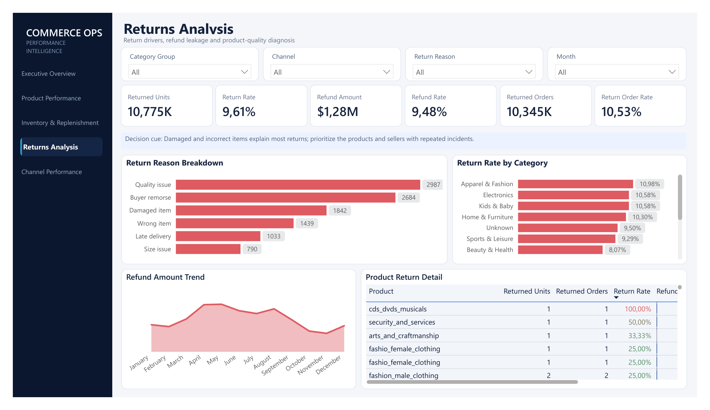
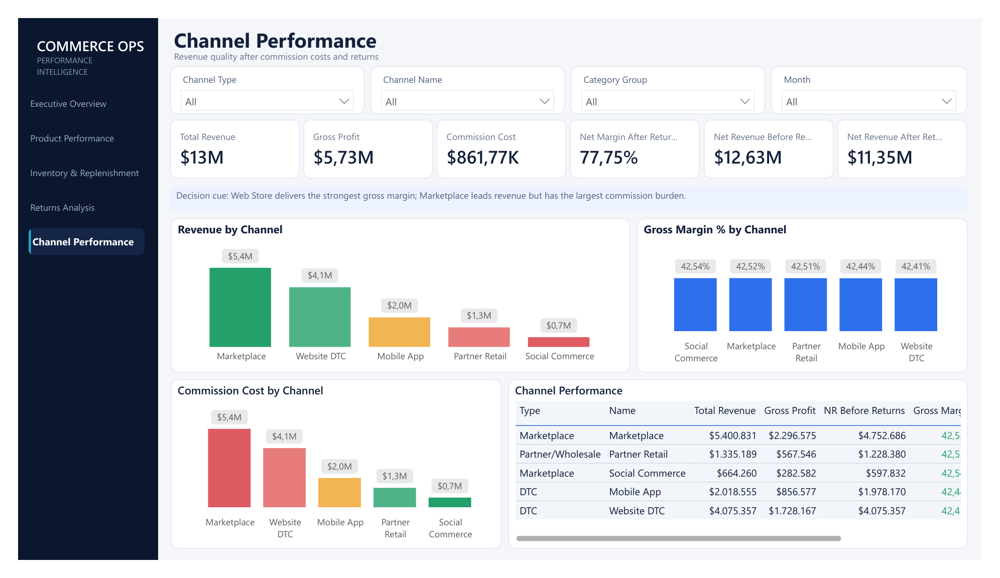

Unified operations model
Transform transaction and operational sources into a star-schema analytical layer.
Portfolio Case Study / 03
A cross-functional operations analytics case study linking sales, margin, returns, inventory and channel economics through a validated star schema and five-page Power BI dashboard.

Which products, SKUs and channels create profitable, sustainable growth after returns, inventory risk and channel costs?
Revenue alone does not reveal operational quality. Teams need a shared view of margin leakage, returns, stockout exposure, overstock and channel economics to prioritize action at product and SKU level.
Public Olist transaction data forms the commercial foundation. A transparent generated Operations layer adds inventory snapshots, channels, warehouses, returns, refunds, lead times, reorder points, stockout risk and overstock flags.
Transform transaction and operational sources into a star-schema analytical layer.
Define business KPIs in SQL first, then reconcile DAX measures against the baseline.
Turn descriptive metrics into product, inventory, return and channel action queues.
The report follows an operational decision path from company performance to product contribution, inventory action, return diagnosis and channel economics. Select any frame to inspect the full dashboard.
Click to enlarge
01 / Executive Overview ↗
02 / Product Performance ↗
03 / Inventory & Replenishment ↗
04 / Returns Analysis ↗
05 / Channel Performance ↗This project emphasizes deterministic business rules and validated analytical modeling rather than predictive ML. SQL baselines are reconciled with Power BI measures before dashboard design.
Home & Furniture is the largest category group and Marketplace is the largest revenue channel.
Gross margin is healthy, but commissions and refunds materially reduce net revenue quality.
10,775 returned units and $1.28M in refunds require product, seller and reason-level investigation.
Critical stockout exposure requires replenishment while overstock calls for markdown, transfer or purchasing reduction.